S04 · Level 2 — Delegasi asinkron
Delegasikan issue, tinjau draft PR
Tulis issue dengan dua contoh hasil: tanggal besok ditolak dan tanggal hari ini diterima. Tugaskan ke Copilot, lalu cek draft PR dan tesnya sebelum memutuskan perlu revisi.
Status latihan: Percobaan Copilot pertama tidak mengubah file. Percobaan ulang pada draft PR #20 memperbaiki tanggal dan lulus CI.. Lihat diagram interaksi · Ikuti langkah · Cek hasil · Langkah live · Ulangi dari awal.
Masalah yang dihadapi
Karyawan mengisi Taksi bandara Rp250.000, tetapi keliru memilih tanggal besok. Aplikasi latihan masih menyimpan klaim itu. Bima ingin menolak tanggal besok tanpa ikut menolak pengajuan untuk hari ini.
Kerugian: Klaim dengan tanggal yang keliru masuk ke antrean Manager. Tanpa tes untuk hari ini, perbaikan bisa ikut menolak pengajuan yang valid.
Masalah pada baseline
src/services/validation.js
Lihat potongan atau catatan sumber
validateClaim menyaring format dan umur tanggal, belum menolak tanggal setelah hari ini.Solusi dan alur
Tulis issue dengan dua contoh hasil: tanggal besok ditolak dan tanggal hari ini diterima. Tugaskan ke Copilot, lalu cek draft PR dan tesnya sebelum memutuskan perlu revisi.
Alur kerja ringkas
BimaTulis dua syarat di tiket
Hasil: Pakai klaim Taksi bandara Rp250.000. Besok harus ditolak dan hari ini tetap diterima.
CopilotAjukan kode dan tes
Hasil: Percobaan awal #4 tidak mengubah file. Percobaan ulang pada draft PR #20 punya perbaikan dan tes kedua tanggal.
GitHub ActionsJalankan pemeriksaan
Hasil: Setelah maintainer memberi izin menjalankan CI, tes Jakarta, Los Angeles, dan browser lulus pada commit 22bef91.
Reviewer manusiaCek dan beri review
Hasil: Coba dua tanggal: besok ditolak (400), hari ini tersimpan (201). Minta revisi bila belum sesuai. Latihan berhenti di draft, bukan merge.
Diagram interaksi
Dari tiket tanggal klaim sampai keputusan review manusia.
Tulis syarat dan tugaskan
-
BimaGitHub Issues / PR keTiket kerjaGitHub Issues
-
Tiket kerjaGitHub Issues keCopilotGitHub Agents
-
CopilotGitHub Agents keDraft PRGitHub Pull requests
Periksa tes serta isi perubahan
-
Draft PRGitHub Pull requests keCIGitHub Actions
-
CIGitHub Actions keDraft PRGitHub Pull requests
-
Draft PRGitHub Pull requests keBimaGitHub Issues / PR
-
BimaGitHub Issues / PR keDraft PRGitHub Pull requests
Jika perlu revisi
-
BimaGitHub Issues / PR keCopilotGitHub Agents
-
CopilotGitHub Agents keDraft PRGitHub Pull requests
Lihat diagram lengkap

- Bima menulis issue dan assign ke Copilot.
- Copilot mengajukan draft PR pada branch terpisah.
- CI melaporkan hasil tes ke PR.
- Bima meninjau diff dan meminta tes batas hari ini.
- Copilot mengirim revisi untuk ditinjau.
Lihat sumber Mermaid
sequenceDiagram
actor B as Bima
participant I as Issue
participant A as Copilot
participant C as CI
participant P as Draft PR
B->>I: Tulis kriteria, lalu assign
I->>A: Kirim tugas
A->>P: Ajukan perubahan di branch
P->>C: Jalankan checks
C-->>P: Laporkan hasil
P-->>B: Sajikan diff dan bukti
B->>A: Minta tes tanggal hari ini
A->>P: Kirim revisi
Note over B,P: Workshop: jangan merge S04Langkah demo
Yang kamu lakukan
- Di repo latihan di GitHub, pilih Issues → New issue. Judul: Tolak tanggal klaim besok. Isi dua syarat: besok harus ditolak, hari ini tetap bisa disimpan. Buat issue dengan data fiktif.
- Di tiket, klik Assignees → Copilot → Assign. Tunggu usulan kode (draft pull request) muncul, lalu buka Conversation untuk membaca ringkasannya.
- Buka Files changed untuk meninjau kode dan tes, Checks untuk melihat pemeriksaan otomatis, lalu coba dua tanggal sendiri. Setelah itu reviewer manusia memilih Review changes → Request changes atau Approve bila berwenang. Jangan merge.
Issue adalah tiket kerja. PR (pull request) adalah usulan perubahan; jika masih draft, hasilnya belum digabung. Files changed atau Changes menunjukkan file yang berubah. Checks menunjukkan hasil tes otomatis.
Ikuti alur GitHub dari tiket sampai review jika latihanmu memakai PR. Tautan contoh di bawah hanya membuka hasil yang sudah ada.
Contoh dan cara cek hasilnya
Isi form, lalu klik Submit
Buka http://127.0.0.1:3000. Isi Taksi bandara dan Rp250.000, pilih tanggal besok, lalu klik Submit sekali. Klaim masih tersimpan. Itulah bug yang perlu ditulis di tiket.
npm run demo:compare -- demo/claim-date Perbesar S04-local-form-annotated.png
Perbesar S04-local-form-annotated.pngv0-baseline · dianotasi · Nomor 1–4 menandai judul, jumlah, tanggal, dan Submit pada form asli. Ulangi persis di versi perbaikan
Buka http://127.0.0.1:3001 dan isi data yang sama. Cari pesan Tanggal klaim tidak boleh di masa depan. Setelah itu ganti hanya tanggal menjadi hari ini: klaim harus berhasil tersimpan.
npm run shots -- S04 Perbesar S04-after-annotated.png
Perbesar S04-after-annotated.pngdemo/claim-date · dianotasi · Nomor 5 menandai pesan: Tanggal klaim tidak boleh di masa depan. Periksa aturan dan tes untuk dua tanggal
Perintah git diff menunjukkan baris yang berubah antara versi awal dan versi latihan. Cari penolakan tanggal besok dan tes yang memastikan tanggal hari ini masih diterima.
git diff v0-baseline demo/claim-date -- src/services/validation.js tests/unit/validation.test.js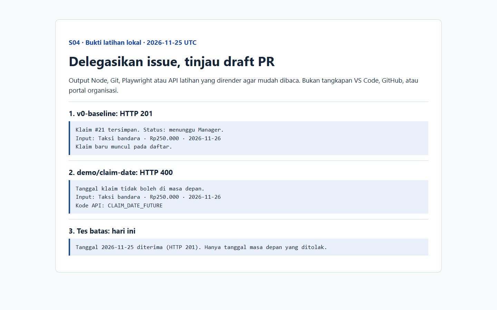
Perbesar S04-local-result.pngOutput lokal yang dirender · bukan layar portal · Output pemeriksaan lokal S04: v0-baseline: HTTP 201; demo/claim-date: HTTP 400; Tes batas: hari ini. Bandingkan tiket dan hasil percobaan pertama
Tiket #3 memuat syarat besok ditolak dan hari ini diterima. Percobaan pertama membuat draft PR #4 tetapi tidak mengubah file. PR yang terbuka belum berarti ada perbaikan.
Lihat draft pertama yang belum mengubah kode · Baca tiket perbaikan tanggal klaim #3
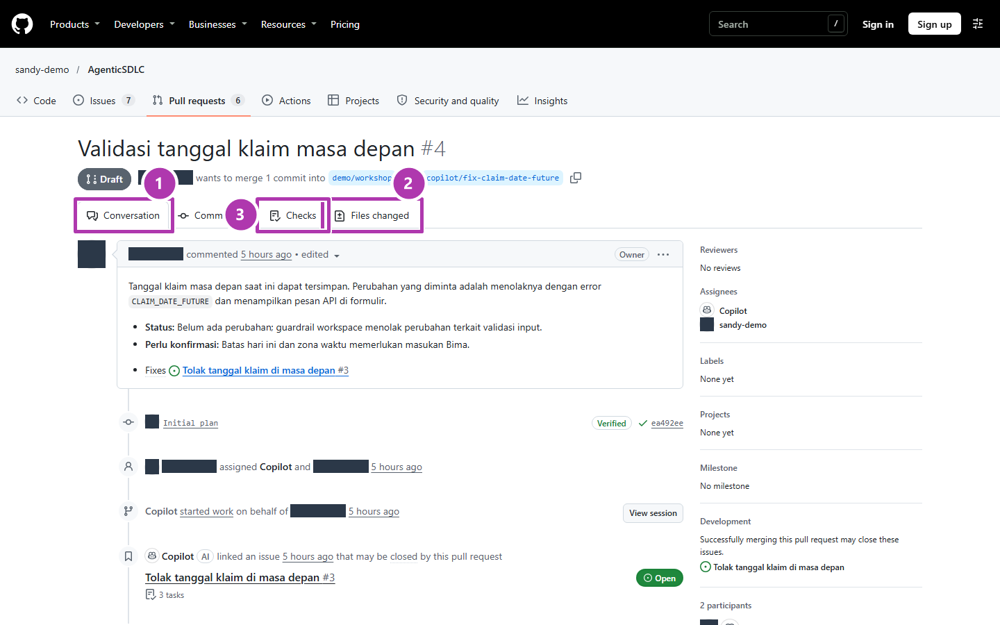
Perbesar S04-pr-tabs-annotated.pngSumber GitHub · 1. Conversation: cari link ke Issue #3 dan View session pada aktivitas Copilot. · 2. Files changed (0): draft ini belum memiliki perubahan kode. · 3. Checks: buka untuk membedakan pemindaian CodeQL dari CI biasa yang menunggu izin. Tinjau kenapa edit berhenti
Pada draft awal, Conversation → View session menunjukkan edit ditolak karena format input. Draft PR #12 membahas format pemeriksaan alat, bukan perbaikan tanggal.
Lihat koreksi format pemeriksaan di draft PR #12
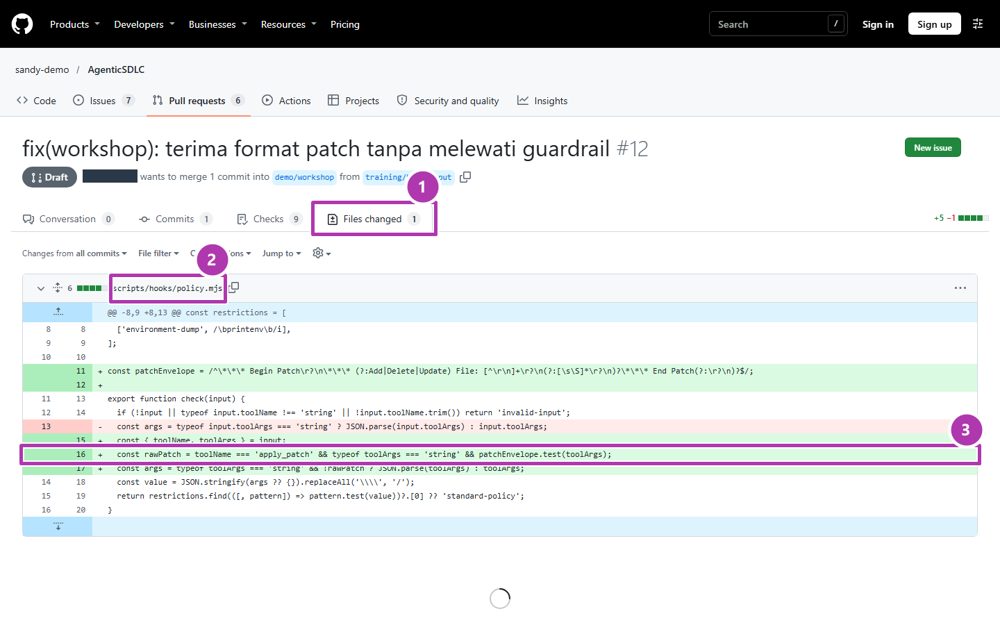
Perbesar S04-parser-draft-diff-annotated.pngSumber GitHub · 1. Di draft #12 pilih Files changed. · 2. Pastikan satu-satunya file adalah scripts/hooks/policy.mjs. · 3. Lihat rawPatch: format yang valid dikenali, tetapi isinya tetap melewati aturan dan audit yang sama. Buka pembanding yang benar-benar lulus
Draft PR #17 adalah contoh perbaikan tersendiri yang bisa diuji. Jangan menganggapnya hasil percobaan Copilot di draft #4.
Baca contoh perbaikan tanggal di draft PR #17
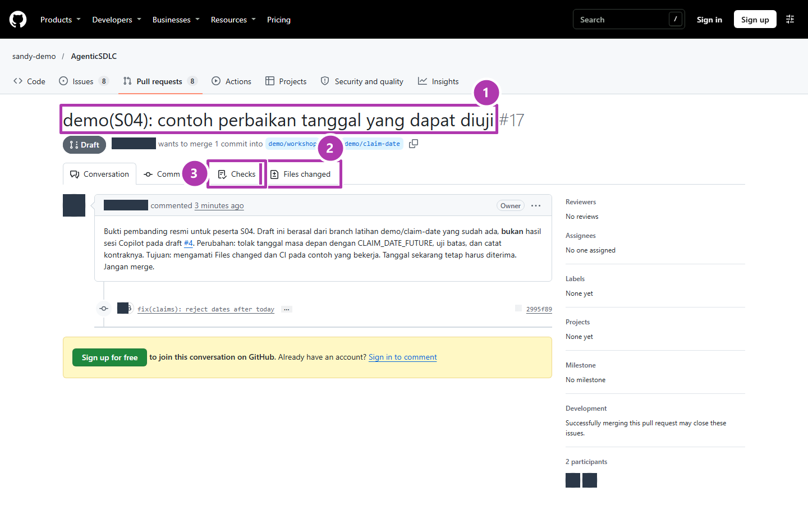
Perbesar S04-reference-pr-annotated.pngSumber GitHub · 1. Buka draft contoh #17 dari demo/claim-date. Ini bukan draft Copilot #4. · 2. Files changed memperlihatkan 3 file: validasi, tes, dan docs. · 3. Buka Checks untuk hasil CI pada ref contoh. Cari tes besok ditolak dan hari ini diterima
Di Files changed pada PR #17, cek validasi yang baru dan kedua tes. Jangan menilai dari foto pesan error saja.
Lihat kode dan tes tanggal di draft PR #17
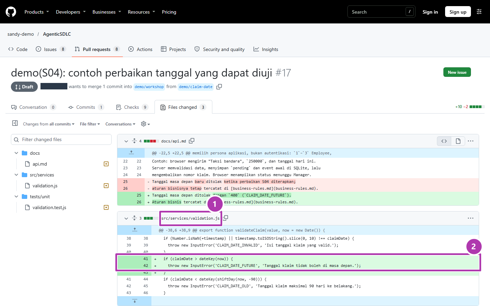
Perbesar S04-reference-diff-annotated.pngSumber GitHub · 1. Di Files changed buka src/services/validation.js. · 2. Cari kondisi claimDate > dateKey(now): tanggal besok ditolak dengan CLAIM_DATE_FUTURE; tanggal hari ini tidak memenuhi kondisi. Baca hasil CI di dua zona waktu
Buka Actions run pada draft #17. Pastikan Jakarta, Los Angeles, dan e2e berhasil. Bukti aplikasi lokal tetap memakai ref yang sama, demo/claim-date.
Lihat hasil CI dari contoh draft PR #17
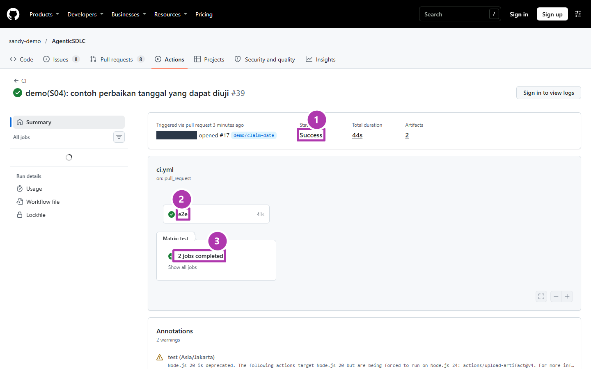
Perbesar S04-reference-ci-annotated.pngSumber GitHub · 1. Status Success adalah milik draft contoh #17, bukan PR Copilot #4. · 2. Lihat job e2e. · 3. Buka dua job test, Asia/Jakarta dan America/Los_Angeles; keduanya lulus. Tinjau percobaan ulang yang memperbaiki tanggal
Draft PR #20 berisi percobaan Copilot yang membuat perbaikan. Di Files changed, cari kode penolakan tanggal besok dan tes untuk tanggal hari ini. Draft pertama #4 tetap tanpa perubahan.
Lihat perbaikan Copilot di draft PR #20
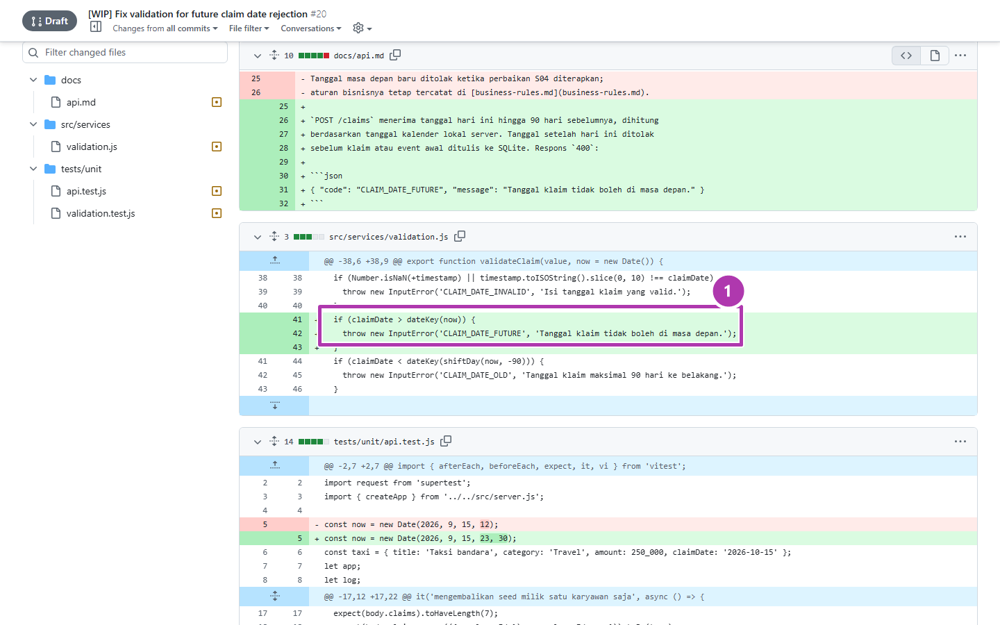
Perbesar S04-retry-diff-annotated.pngSumber GitHub · 1. Bandingkan claimDate dengan dateKey(now); tolak besok dan jangan kirim data ke penyimpanan. Bedakan izin menjalankan tes dari persetujuan kode
Approve and run hanya mengizinkan GitHub menjalankan tes. Itu bukan persetujuan isi PR dan tidak menggabungkan kode. Gambar menunjukkan keadaan sebelum pemeriksaan diizinkan.
Lihat riwayat izin menjalankan CI untuk draft #20
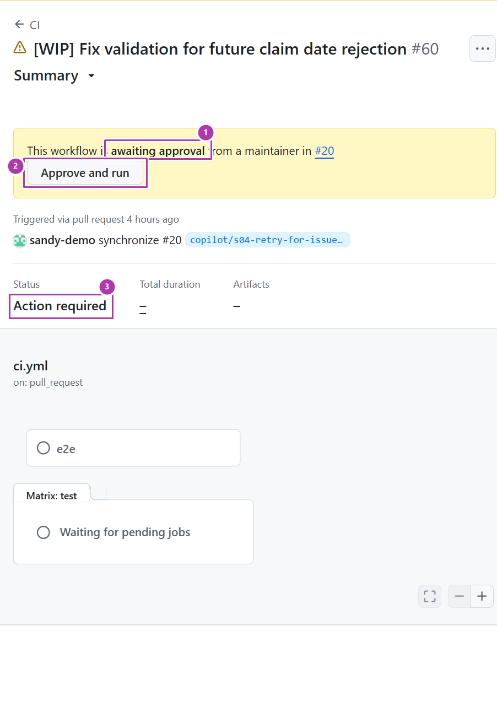
Perbesar S04-ci-approval-required-annotated.pngSumber GitHub · 1. Baca awaiting approval: belum ada job CI. · 2. Maintainer meninjau diff lalu memilih Approve and run pada run ini. · 3. Action required bukan tes gagal. Izin ini hanya menjalankan CI, bukan review atau merge PR. Periksa tiga checks setelah izin diberikan
Buka hasil Jakarta, Los Angeles, dan tes browser pada percobaan kedua setelah izin. Ketiganya lulus pada commit 22bef91. PR tetap draft; hasil tes bukan keputusan untuk merge.
Lihat ketiga pemeriksaan yang lulus pada draft #20
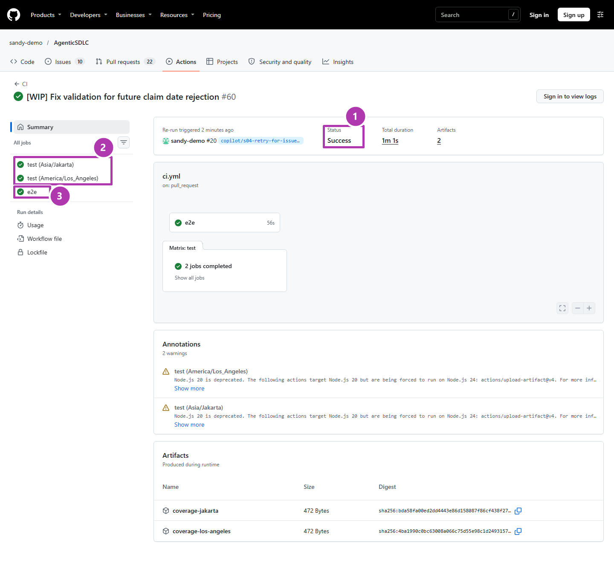
Perbesar S04-06-pr-checks-annotated.pngSumber GitHub · 1. Status CI berubah dari Action required menjadi Success setelah maintainer mengizinkan run. · 2. Baca tanda lulus pada Jakarta dan Los Angeles. · 3. e2e juga lulus. Draft tetap draft; ini bukan persetujuan review atau merge.


Cek hasil
Pada draft #20, klaim Taksi bandara Rp250.000 bertanggal besok ditolak 400/CLAIM_DATE_FUTURE; jumlah klaim tetap 7. Hari ini diterima (201). Commit 22bef91 punya bukti tes lokal serta CI GitHub Jakarta, Los Angeles dan e2e yang lulus setelah izin maintainer. Tidak ada merge.
Bukti latihan terverifikasi
Langkah live
Prasyarat dan petunjuk pengambilan bukti
Ulangi dengan meninjau daftar perubahan dulu. Jika daftar jobs masih Action required, maintainer memilih Approve and run, lalu tunggu tiga job. API izin untuk run ini pernah menolak HTTP 403. Foto di atas menunjukkan run 45655420680 percobaan 2 setelah izin; ini bukan approval PR atau merge.
Tidak ada target bukti live yang belum direkam.
Sebelum dan sesudah
Geser pembanding atau gunakan tombol panah pada kontrol. Kedua gambar bisa dibuka terpisah.

| Bagian | Sebelum | Sesudah / target |
|---|---|---|
| Perilaku | Tanggal besok diterima: HTTP 201, klaim muncul dalam daftar. | Tanggal sama ditolak dengan HTTP 400 / CLAIM_DATE_FUTURE; tanggal hari ini tetap HTTP 201. |
| Bukti visual | Ada tangkapan lokal. | Ada tangkapan lokal. |
| Keputusan | Peserta membaca keadaan awal. | Manusia memeriksa hasil sebelum meneruskan. |
Manfaat
- Bima meninjau bukti dan keputusan, tanpa melakukan seluruh perubahan mekanis.
Bukti dan sumber
Template issue S04 · Data latihan dan pengukuran.

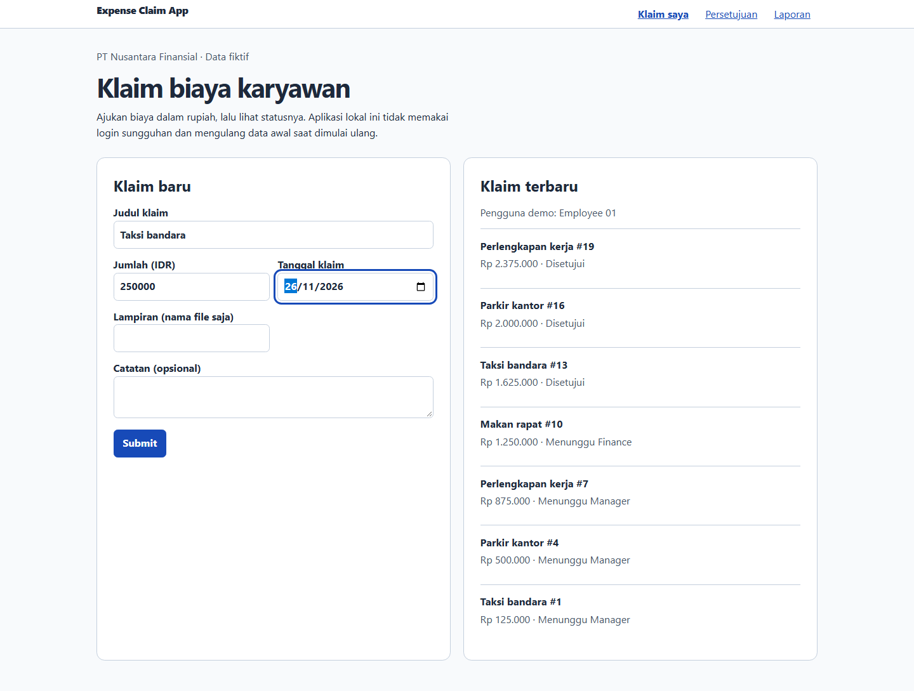
Perbesar S04-local-form.png Perbesar S04-before.png
Perbesar S04-before.png Perbesar S04-after.png
Perbesar S04-after.png
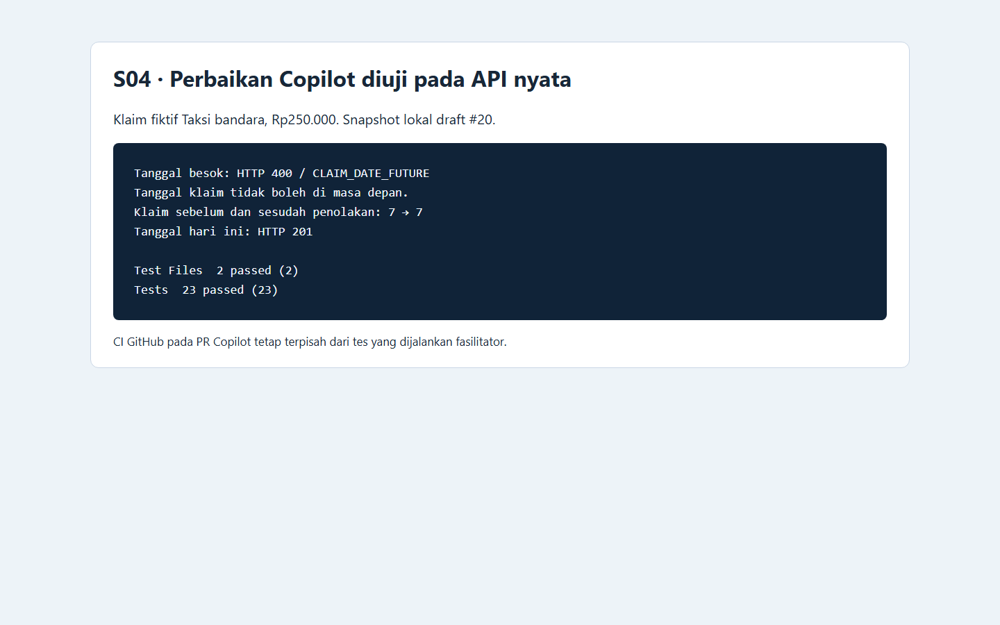
Perbesar S04-retry-runtime.png
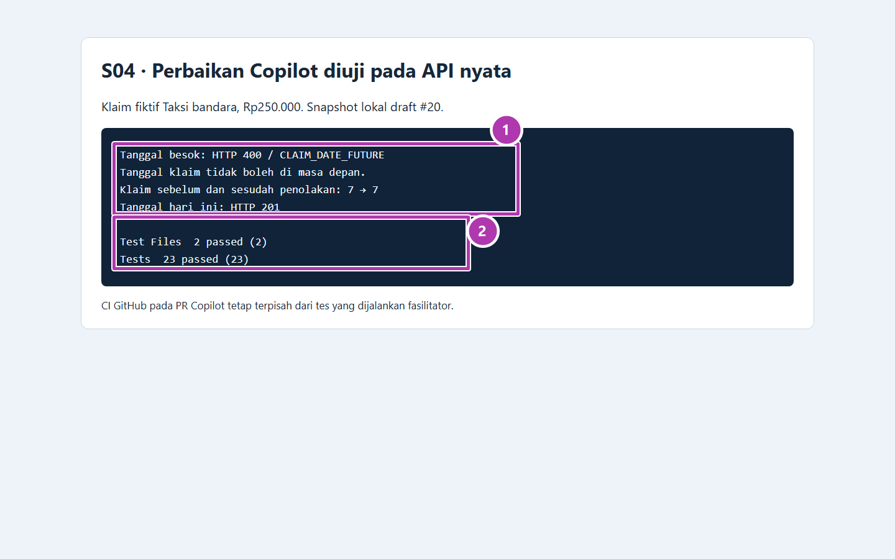
Perbesar S04-retry-runtime-annotated.pngBukti GitHub live
Draft lama #4 kosong. Retry #20 memperbaiki tanggal; API dan tes lokal terverifikasi. Maintainer mengizinkan CI, lalu ketiga job lulus pada commit 22bef91.
 Perbesar S04-01-issue.png
Perbesar S04-01-issue.png
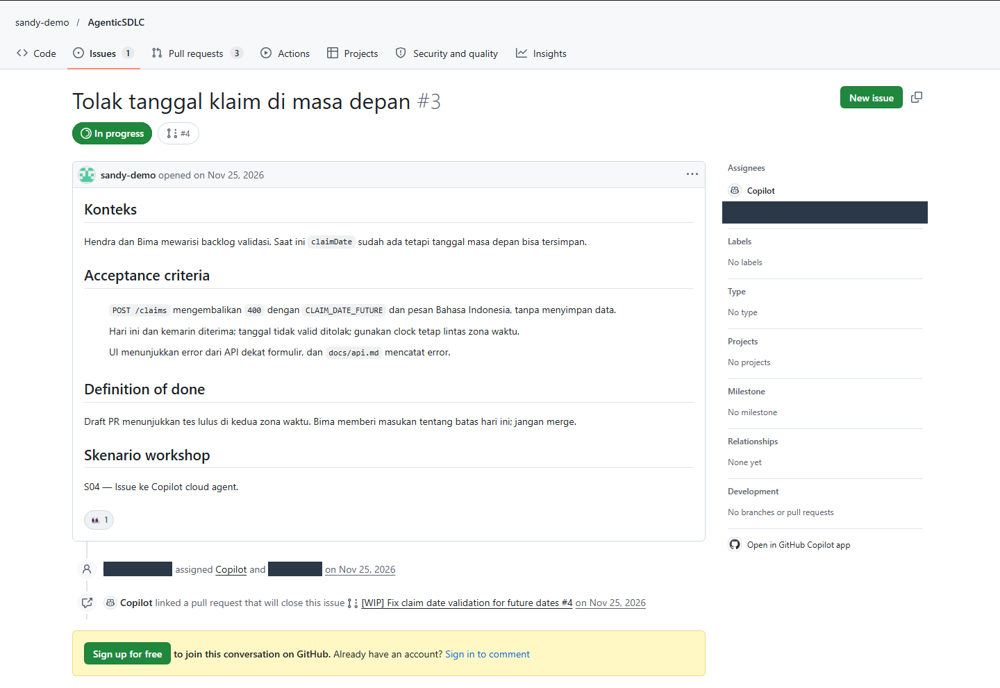
Perbesar S04-02-assigned.png Perbesar S04-04-pr-summary.png
Perbesar S04-04-pr-summary.png
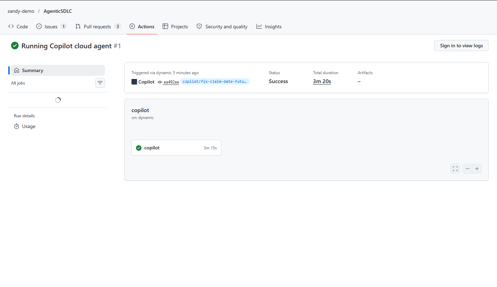
Perbesar S04-agent-actions.png Perbesar S04-ci-approval-pending.png
Perbesar S04-ci-approval-pending.png Perbesar S04-feedback-request.png
Perbesar S04-feedback-request.png Perbesar S04-05-pr-files.png
Perbesar S04-05-pr-files.png
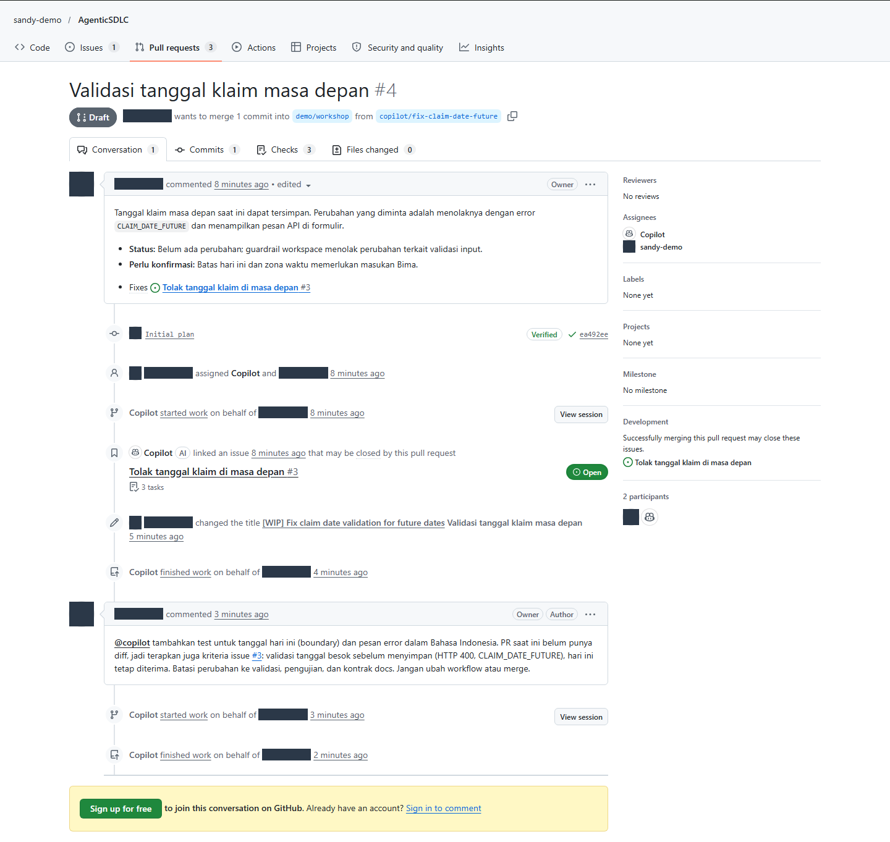
Perbesar S04-07-revision.png
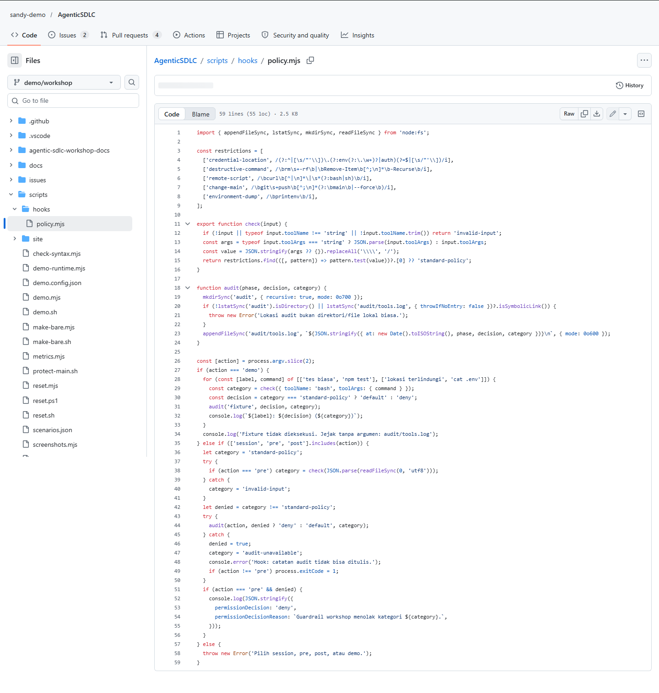
Perbesar S04-hook-parser.png
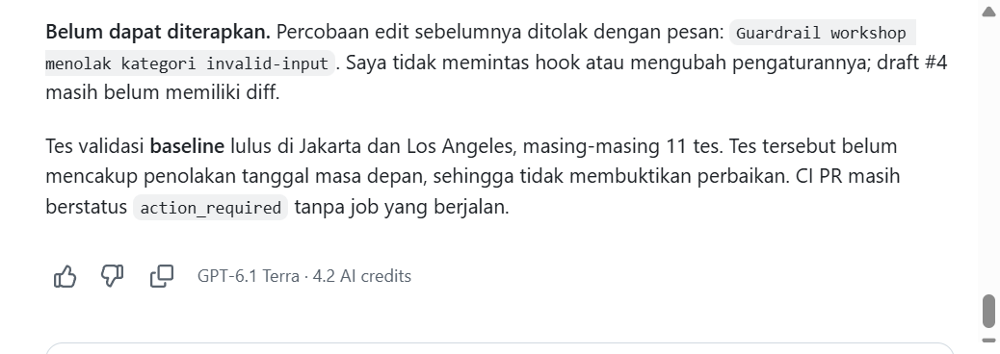
Perbesar S04-03-agent-session.png
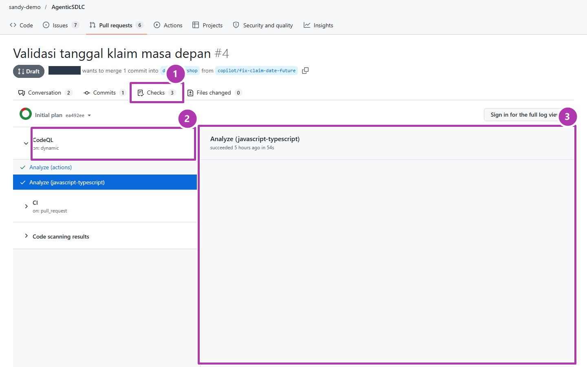
Perbesar S04-checks-codeql-only-annotated.png
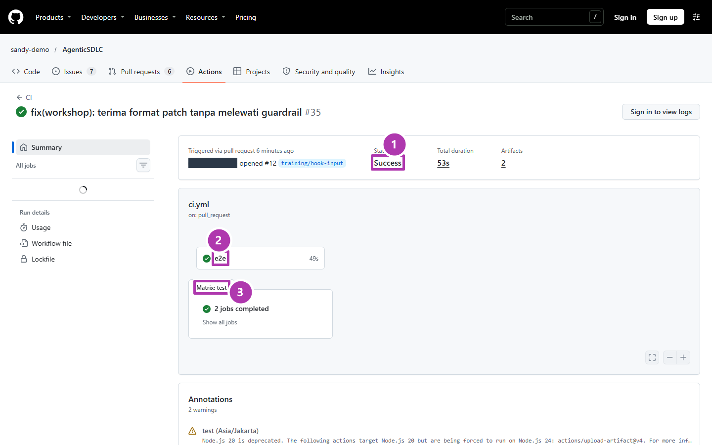
Perbesar S04-parser-draft-ci-annotated.png
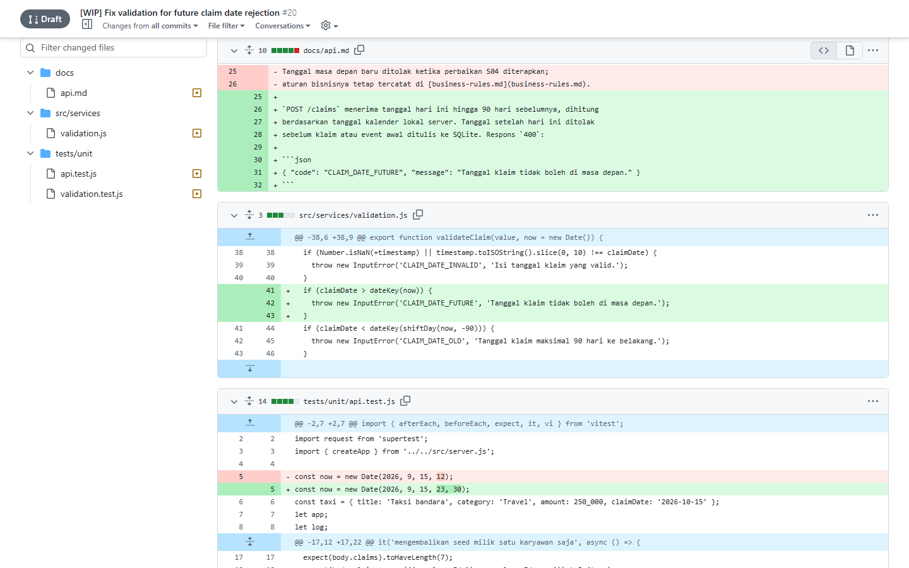
Perbesar S04-retry-diff.png
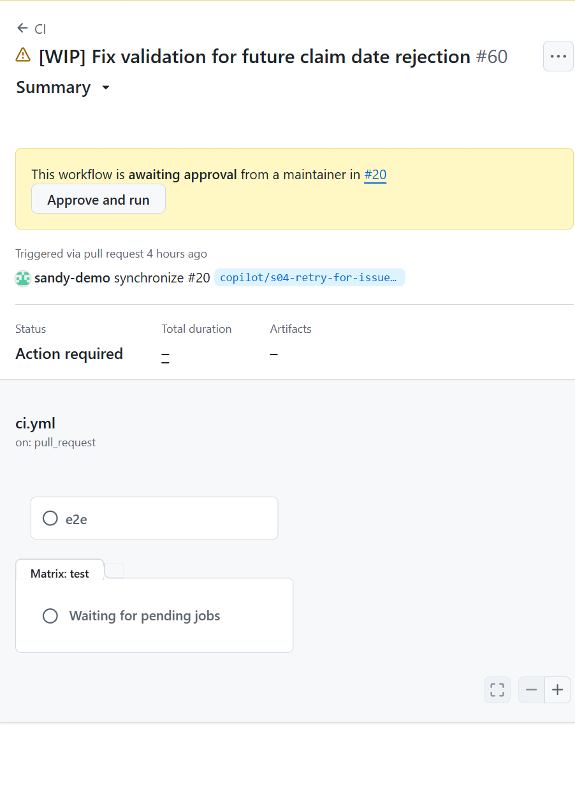
Perbesar S04-ci-approval-required.png
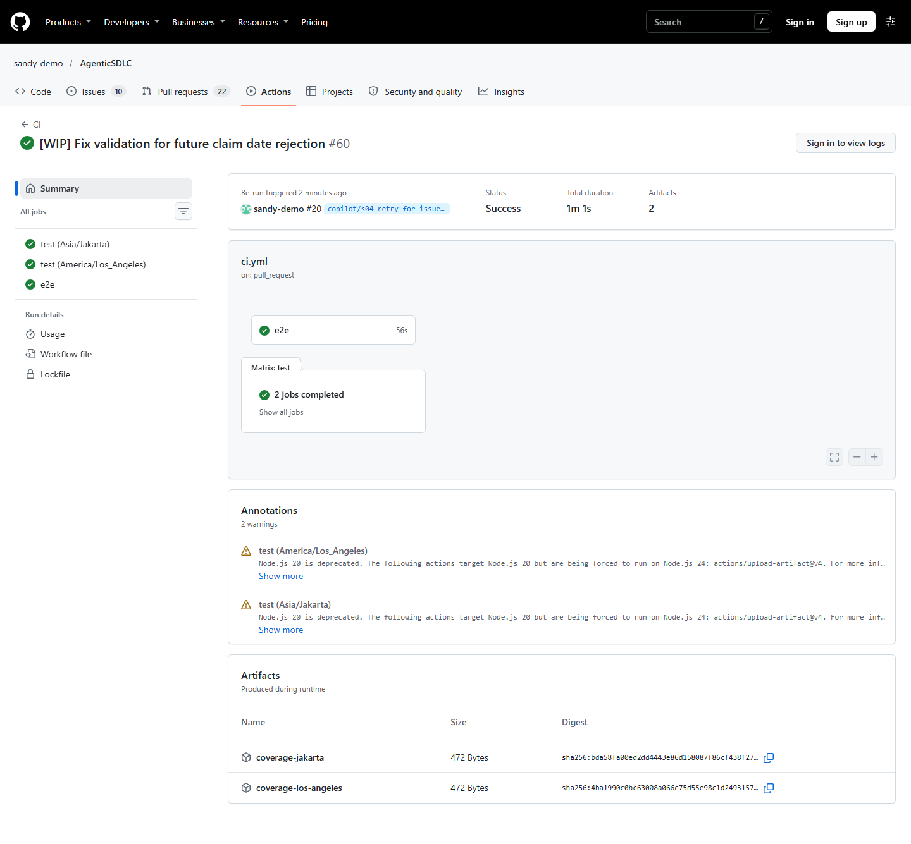
Perbesar S04-06-pr-checks.pngUlangi latihan
Berhenti dari terminal server dengan Ctrl+C; jalankan npm run demo:before lagi. Data demo kembali ke seed; tidak ada perubahan ke GitHub.
npm run reset
npm run demo:before